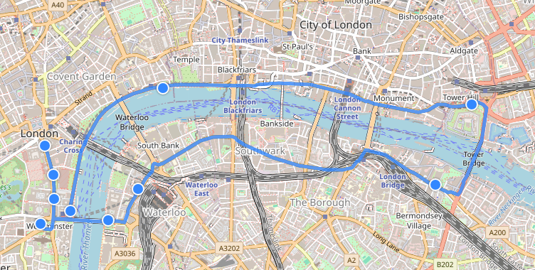
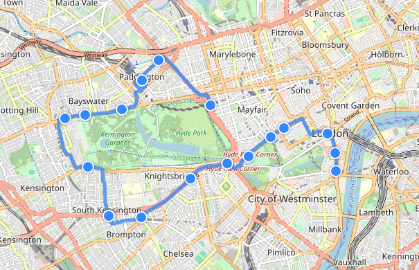

London Transport : July 2026
I took a trip down to London for 1 night in early July, exploring some of the transport offerings that the capital city had to offer.
Chugging down south
The trip saw an early traing down to London Euston Railway Station with an Avanti West Coast Pendolino with the Love of my Life Turbo. I took the opportunity to walk around central London, seeing what it had to offer. There were plenty of things to see and do.
Sightseeing on an open top
A lot of competition amongst independent and large operators around the city. I took the chance to travel on Tootbus London, as they were conveniently nearby where I was standing. This tour started at Trafalgar Square where I ventured on the Red Route tour around the eastern side of London. Due to a crash near St Paul's Cathedral, this bus went on diversion on the north side of the Thames. Before then looping back to the city centre where I disembarked at Westminster, near Big Ben, to board the Blue Route.

Down to the blues
I started the Blue Route at Westminster, near Big Ben, with Tootbus London YR10 FGG weaving through the western side of the city past Hyde Park where I saw several London attractions and many buses along the route. On both routes, I was supplied complimentary earphones that can be plugged into the audio holes located at every seat. Unfortunately, none of the seats I tried seemed to have worked. However, both tours were still great the experience nonetheless, I would highly recommend them.
